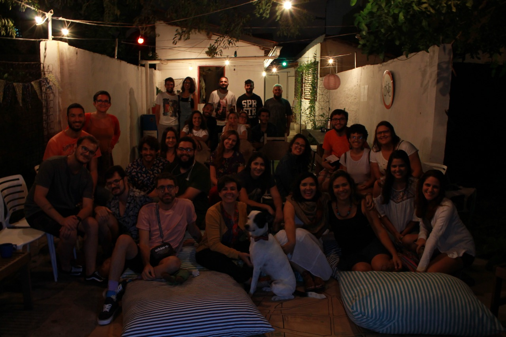
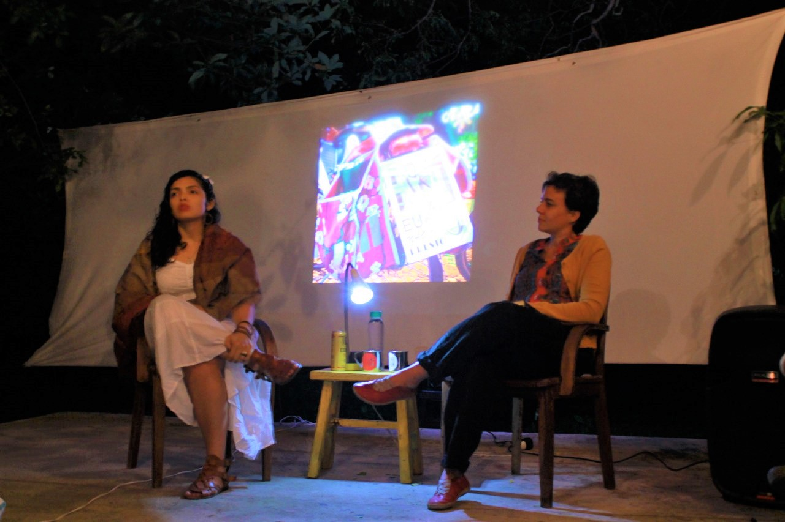

©2017 LabRua
Template: Bootstrapious
+ Kishan B

A ideia do evento é que seja uma troca, inspirado no roda vida, trazemos pessoas para conversar sobre diversos temas que de alguma forma influenciam em termos cidades melhores. O objetivo central do evento é de troca, os participantes são convidados a serem protagonistas, alimentando o debate através de perguntas aos convidados.
A escolha do nome se deu pela janela ser o principal elemento de ligação entre a rua e os edifícios, o local por onde podemos ter nossos olhos da rua. Onde nossas impressões e contato com o espaço público acontece.
O primeiro contou com a presença de Maria Gouveia para falar do tema Cidade, Mulher e Cicloativismo. Maria trouxe sua experiência como ciclista, sua relação entre ser mulher e ocupar o espaço público, além de todas as batalhas contra a força da cultura do automóvel, força essa que transformou em prazer, prazer de estar nas ruas e tentar fazer com que mais pessoas percebam como é feliz estar de bicicleta na cidade. Além de contar sua história de cicloativismo em Campina Grande desde que chegou aqui de Fortaleza, Maria nos deixou com vontade de se fazer mais presente no espaço público. E ela continua firme e forte em fazer mais pessoas entenderem essa alegria, através do trabalho no Bike Anjo, no Minha Campina e nos Novos Urbanos.


